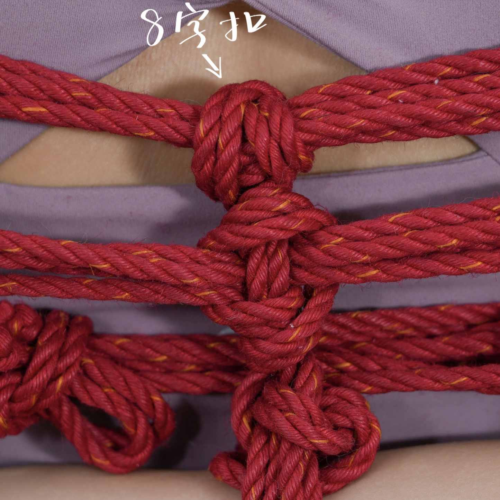

常用绳缚词汇库
首页
8字扣
首页
>
部分绳缚术语
> 8字扣
8字扣 (Figure-8 Hitch)
形成"8"字形固定效果的扣结
多语言表述
中文表述
8字扣
英文表述
Figure-8 Hitch
日文表述
8の字結び
はちのじむすび
定义与概述
8 字扣可用来固定数根并排的绳子。由于绳缚中经常需要以数根绳子并排成带状，所以8 字扣使用得相当频繁。
主要特征
8字结构：
明显的"8"字形外观特征
易于检查：
结构清晰便于安全检查
稳定性好：
8字形结构提供良好稳定性
受力均匀：
受力分布较为均匀
不易意外解开：
在正常受力下不易意外解开
应用场景
安全固定：
需要高安全性的固定场合
救援作业：
救援操作中的关键连接点
登山保护：
登山保护系统中的连接
工业作业：
工业绳索作业中的固定点
教学示范：
绳索安全教学的标准示范结

8字扣
返回